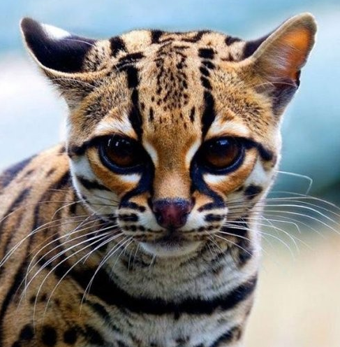
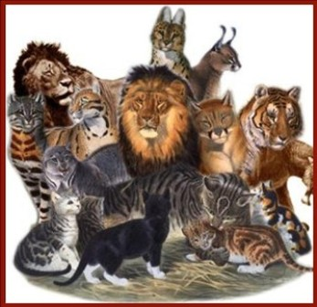

|
|

Интересные факты
У кошек и у людей за эмоции отвечают одни и те же участки мозга
Кошки совершают от 20 до 40 вдохов-выдохов в минуту
Нормальная температура тела у кошек около 38 градусов
В скелете кошки 230 костей (у человека 206)
У кошки в позвоночнике 30 позвонков - на пять позвонков больше, чем у человека
Кошки слышат намного лучше людей. Диапазон восприятия - до 65кГц (у человека - до 20кГц)
Кошки могут видеть на расстояние до 60 метров. Поле зрения - 185, а периферийное зрение - около 285 градусовРисунок поверхности носа кошки уникален, как отпечаток пальца у человека
Кошки чувствуют запахи в 14 раз сильнее, чем люди. У них 60 - 80 миллионов обонятельных рецепторов (у человека - 5 - 20 миллионов)
Кошка в среднем весит 3-5 килограмм
Кошка за свою жизнь может иметь больше 100 котят
Одна пара кошек и их потомки за 7 лет могут произвести 420 000 котят
Кошки мурлыкают с частотой дизельного двигателя на холостом ходу - 26 герц, причем делают это и на вдохе, и на выдохе
Средний срок жизни домашней кошки - 15 лет, в то время как для диких - от 3 до 5 лет
Чем больше вы говорите с кошками, тем больше они говорят с Вами
Кошка легко прыгает на высоту в пять раз превышающую ее рост
Если кошка, кусается, когда ей гладят живот, это не значит, что она злая, просто ей не нравиться

Кошки трутся о нас, чтобы "перебить" чужой запах
Самой старой кошкой была Puss из Англии.Она прожила 36 лет
Гепард и суматранская кошка - единственные кошки, которые не могут прятать когти
Семейство кошачьих (Felidae) насчитывает более 30 видов - от 350-килограммовых тигров до 1,5-килограммовой "ржавой" кошки
Когда кошки мяукают, так они пытаются общаться с людьми. Со своими же представителями семейства они общаются по-другому
Все кошки обладают прекрасным слухом. Ухо у кошек способно поворачиваться на сто восемьдесят градусов
Если ваша кошка поменяла настроение, не удивляйтесь. Эти животные очень чуткие и чувствуют настроение своего хозяина
Домашние животные отличаются от диких тем, что во время ходьбы у дикого кота хвост расположен горизонтально, а у домашнего находится в вертикальном положении
Самая маленькая кошка в мире – это сингапурская кошка. Весит она около трех килограмм. Самый большой представитель семейства кошачьих – тигр. Он весит где-то триста килограмм
|